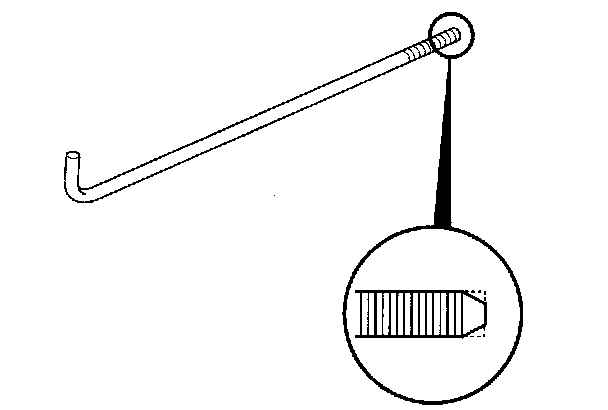

Timing Belt Removal
Timing Belt Removal1. Turn the crankshaft so its white mark (A) lines up with the pointer (B).
2. Check that the No. 1 piston top dead center (TDC) mark (A) on the front camshaft pulley and the pointer (B) on the front upper cover are aligned.
NOTE: If the marks are not aligned, rotate the crankshaft 360 degrees, and recheck the camshaft pulley mark.
3. Remove the drive belt.
4. Remove the drive belt auto-tensioner.
5. For ease of removing the side engine mount, support the engine with a jack and wood block under the oil pan.
6. Remove the ground cable (A), then remove the upper half of the side engine mount bracket (B).
7. Remove the front upper cover (A) and rear upper cover (B).
8. Raise the vehicle on the lift, then remove the right front wheel.
9. Remove the splash shield.

10. Remove the crankshaft pulley.
11. Remove the lower cover.
12. Remove one of the battery clamp bolts from the battery tray, and grind the end of it as shown.

13. Thread the battery clamp bolt in as shown to hold the timing belt adjuster in its current position. Tighten it by hand; do not use a wrench.
14. Remove the timing belt guide plate (A).
15. Remove the lower half of the side engine mount bracket.
16. Remove the idler pulley bolt (A) and idler pulley (B), then remove the timing belt. Discard the idler pulley bolt.